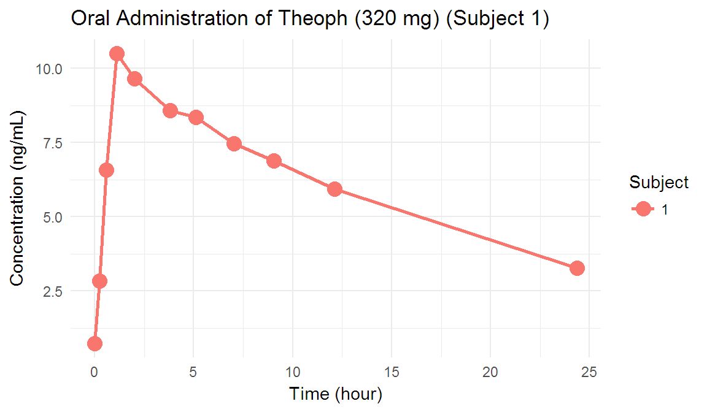

Chapter 2 패키지: NonCompart
2.1 sNCA()
한명의 대상자에 대해 비구획 분석을 시행합니다.
# For one subject
x = Theoph[Theoph$Subject=="1","Time"]
y = Theoph[Theoph$Subject=="1","conc"]
sNCA(x, y, dose=320, doseUnit="mg", concUnit="mg/L", timeUnit="h")## b0 CMAX CMAXD TMAX TLAG
## 2.3687851 10.5000000 0.0328125 1.1200000 0.0000000
## CLST CLSTP TLST LAMZHL LAMZ
## 3.2800000 3.2801465 24.3700000 14.3043776 0.0484570
## LAMZLL LAMZUL LAMZNPT CORRXY R2
## 9.0500000 24.3700000 3.0000000 -0.9999999 0.9999997
## R2ADJ AUCLST AUCALL AUCIFO AUCIFOD
## 0.9999995 148.9230500 148.9230500 216.6119330 0.6769123
## AUCIFP AUCIFPD AUCPEO AUCPEP AUMCLST
## 216.6149558 0.6769217 31.2489169 31.2498763 1459.0711035
## AUMCIFO AUMCIFP AUMCPEO AUMCPEP VZFO
## 4505.5348194 4505.6708646 67.6160287 67.6170065 30.4867482
## VZFP CLFO CLFP MRTEVLST MRTEVIFO
## 30.4863228 1.4772963 1.4772757 9.7974834 20.8000305
## MRTEVIFP
## 20.8003683
## attr(,"units")
## [1] "" "mg/L" "mg/L/mg" "h" "h"
## [6] "mg/L" "mg/L" "h" "h" "/h"
## [11] "h" "h" "" "" ""
## [16] "" "h*mg/L" "h*mg/L" "h*mg/L" "h*mg/L/mg"
## [21] "h*mg/L" "h*mg/L/mg" "%" "%" "h2*mg/L"
## [26] "h2*mg/L" "h2*mg/L" "%" "%" "L"
## [31] "L" "L/h" "L/h" "h" "h"
## [36] "h"이때의 그림은 다음과 같습니다. (Figure 2.1)
ggplot(Theoph %>% dplyr::filter(Subject == 1),
aes(Time, conc, group = Subject, color = Subject)) +
geom_point(size = 4) + geom_line(size = 1) +
theme_minimal() +
labs(title = 'Oral Administration of Theoph (320 mg) (Subject 1)',
x = 'Time (hour)', y = 'Concentration (ng/mL)')

Figure 2.1: Individual concentration-time curves of oral administration of Theoph (Subject 1)
2.2 tblNCA(): 전체 대상자 비구획 분석
가장 많이 쓰는 함수 입니다! NonCompart 패키지의 핵심적인 기능입니다. 아래의 코드를 R의 콘솔창에 넣어보세요. 테오필린 경구 투여시의 비구획 분석입니다.
Theoph_tblNCA <- tblNCA(Theoph, key="Subject", dose=320, concUnit="mg/L")결과는 matrix 형태인데 너무 길기 때문에 핵심적인 일부 파라메터 (Cmax, Tmax, AUClast)만 표시할 수도 있습니다.
Theoph_tblNCA_selected <- Theoph_tblNCA[ , c('Subject', 'CMAX', 'TMAX', 'AUCLST')]
Theoph_tblNCA_selected## Subject CMAX TMAX AUCLST
## [1,] "1" "10.5" "1.12" "148.92305"
## [2,] "2" "8.33" "1.92" "91.5268"
## [3,] "3" "8.2" "1.02" "99.2865"
## [4,] "4" "8.6" "1.07" "106.7963"
## [5,] "5" "11.4" "1" "121.2944"
## [6,] "6" "6.44" "1.15" "73.77555"
## [7,] "7" "7.09" "3.48" "90.7534"
## [8,] "8" "7.56" "2.02" "88.55995"
## [9,] "9" "9.03" "0.63" "86.32615"
## [10,] "10" "10.21" "3.55" "138.3681"
## [11,] "11" "8" "0.98" "80.0936"
## [12,] "12" "9.75" "3.52" "119.9775"인도메타신 정맥 투여시의 비구획 분석입니다. 함수인자 adm을 infusion으로 바꾼 것을 볼 수 있고 dur가 추가된 것을 볼 수 있습니다.
Indometh_tblNCA <- tblNCA(Indometh, key="Subject", colTime="time", colConc="conc", dose=25,
adm="Infusion", dur=0.5, concUnit="mg/L")역시 핵심적인 일부 파라메터 (Cmax, Tmax, AUClast)만 표시할 수도 있습니다.
Indometh_tblNCA_selected <- Indometh_tblNCA[ , c('Subject', 'CMAX', 'TMAX', 'AUCLST')]
Indometh_tblNCA_selected## Subject CMAX TMAX AUCLST
## [1,] "1" "1.5" "0.25" "1.74125"
## [2,] "2" "2.03" "0.25" "2.9325"
## [3,] "3" "2.72" "0.25" "2.93375"
## [4,] "4" "1.85" "0.25" "2.4775"
## [5,] "5" "2.05" "0.25" "1.95375"
## [6,] "6" "2.31" "0.25" "2.8725"2.3 기술통계 (Descriptive statistics)
R에서는 필요에 따라서 자신만의 함수를 만들 수도 있습니다. 아래 두줄을 실행하면 desc_tblNCA() 함수를 사용하여 기술통계량을 쉽게 구할 수 있습니다. (Table 2.1 and 2.2)
desc_tblNCA <- function(tblNCA){as.data.frame(tblNCA) %>%
mutate_all(function(x) as.numeric(as.character(x))) %>% broom::tidy()}desc_tblNCA(Theoph_tblNCA_selected)
desc_tblNCA(Indometh_tblNCA_selected)| column | n | mean | sd | median | trimmed | mad | min | max | range | skew | kurtosis | se |
|---|---|---|---|---|---|---|---|---|---|---|---|---|
| Subject | 12 | 6.500000 | 3.605551 | 6.50000 | 6.5000 | 4.447800 | 1.00000 | 12.000 | 11.0000 | 0.0000000 | -1.501603 | 1.0408330 |
| CMAX | 12 | 8.759167 | 1.472959 | 8.46500 | 8.7270 | 1.623447 | 6.44000 | 11.400 | 4.9600 | 0.2137012 | -1.186397 | 0.4252066 |
| TMAX | 12 | 1.788333 | 1.112408 | 1.13500 | 1.7280 | 0.489258 | 0.63000 | 3.550 | 2.9200 | 0.6998568 | -1.345075 | 0.3211245 |
| AUCLST | 12 | 103.806775 | 23.645216 | 95.40665 | 102.2983 | 19.794711 | 73.77555 | 148.923 | 75.1475 | 0.5625746 | -1.117566 | 6.8257858 |
| column | n | mean | sd | median | trimmed | mad | min | max | range | skew | kurtosis | se |
|---|---|---|---|---|---|---|---|---|---|---|---|---|
| Subject | 6 | 3.500000 | 1.8708287 | 3.500 | 3.500000 | 2.2239000 | 1.00000 | 6.00000 | 5.0000 | 0.0000000 | -1.797619 | 0.7637626 |
| CMAX | 6 | 2.076667 | 0.4135537 | 2.040 | 2.076667 | 0.3409980 | 1.50000 | 2.72000 | 1.2200 | 0.1777485 | -1.361889 | 0.1688326 |
| TMAX | 6 | 0.250000 | 0.0000000 | 0.250 | 0.250000 | 0.0000000 | 0.25000 | 0.25000 | 0.0000 | NaN | NaN | 0.0000000 |
| AUCLST | 6 | 2.485208 | 0.5267325 | 2.675 | 2.485208 | 0.3826961 | 1.74125 | 2.93375 | 1.1925 | -0.3695625 | -1.940994 | 0.2150376 |